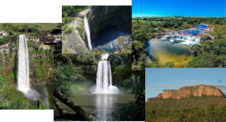
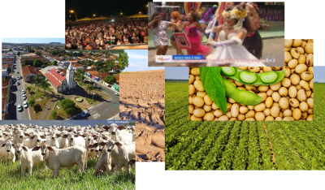

Informações diversas sobre CAIAPÔNIA: Útilidade Pública, Notícias,
Oportunidades, Desenvolvimento, Parcerias & NEGÓCIOS, Socio-Político, Educação Política, Vagas de Emprego e MUITO Mais...
*** Um LINDO Projeto de AMOR... ***
SEJA BEM-VINDO... ESTAMOS HONRADOS COM SUA VISITA…
Sempre que poder, nós visite, ok, GRATO!
Com Amor...
Antes de mais nada, queremos AGRADECER ao soberano, infinito e glorioso Deus do universo, nosso querido e amado Pai Ceslestial, por tantas dádivas e provisões ao nosso umilde ser!!! GRATO por TUDO, meu querido e amado Pai. "Te Amo Maravilhoso DEUS!!!"
*** Belezas Naturais ***

*** NOSSAS Riquesas ***

Logo, NOSSA intenção e OBJETIVO é trazer sempre elementos substanciais de apontamentos, sugestões e crescimento, oportunidades, desenvolvimento, etc, que materialize, não só no município, como também, na vida de todos cidadãos que aqui reside, por meio do uso correto do DEVIDO POTENCIAL que temos em caiapônia.
Caiapônia cidade bonita e hospitaleira, cidade da produção agrícola, cidade da pecuária, o melhor rebanho do Estado de Goiás, é o terceiro maior município do estado de Goiás, a cidade de pessoas honestas, hospitaleiras, pessoas bonitas, cidade das mulheres bonitas, cidade da cultura, carnaval, festa religiosas, festa do Divino Pai Eterno, festa da pecuaria, grandiosa capital das cachoeira do Estodo Goiás, cidade de povo trabalhador, povo onesto e sincero, gente boa, terra maravilhosa, e muito, muito mais...
SocioPolítico
=> Veja Atual POLÍTICA em CAIAPÔNIA
*** Geográfia da nossa política Municipal, mostrada de forma imparcial e veridica conforme cenario real.
*** Ranking dos candidatos, resultados das pesquisas de opinião pública, pesquisas internas e muito mais...
*** Conteúdos de educação política social e de sociedade.
*** Aquí você encontra todas informações de política para ficar bem infomado. No link abaixo
MOTIVAÇÕES/INOVAÇÃO
Quando olhei para cidade, com olhar mais profundo! Encontrei diversas situações, na maioria, situações mal resolvidas, principalmente, problemas sem qualquer interesse de soluções do poder publico e afins. Um enorme POTENCIAL inativo e largado, sem qualquer proposição, sem amor, abandonada,,, em termos de crescimento sustentável e de eficiência contemporânea, sob diversos aspectos sociais.
Isso me intrigou muito. Senti necessidade de fazer algo, de descruzar os braços por nossa querida e amada caiapônia, por nosso povo, é o que mais me motivou a construir diversas alternativas de soluções, assim, propor uma caiapônia melhor para todos nós, tracionar a cidade com novas ideias, perspectivas, prerrogativas, tecnicas e tecnologias de crescimento, inovaçao, desenvolvimento e oportunidades. *** TUDO NOVO -- TUDO é Possivel ao que CRÊ" ***
PRÁTICAS/SOLUÇÕES
Contudo, Sob Novos aspectos holísticos e seguimentados dos diversos elementos do município, posso, do ponto de vista sociopolítico analítico, contingencial, sugerir alternativas de soluções viáveis, bem como, do ponto de vista técnico, pois, é nosso dever encontrar, estudar, analisar, melhores alternativas e colocarmos em prática. Tendo em vista que, todo enorme aparato, de mecanismos, de tecnologias, praticas, técnicas e competências disponíveis para tal. É nesse sentido que quero fazer diversas contribuições pessoais e sociais com toda família caiaponiense e circunvizinhas.
Sei que dará certo, deu certo em vários lugares e pessoas, deu certo para conhecidos, clientes e principalmente para mim. Sabemos, portanto, por conhecimentos e por praticas, Logo, também dará certo para nos. Familiares, companheiros, colegas, AMIGOS E IRMÃOS.
"TUDO NOVO"
Agora, iniciamos ESSE "NOVO ESPAÇO" principalmente e outros, para nos interagirmos, realizar e construir interesses SOCIOPOLÍTICOS E PESSOAIS INOVADOR caiaponienses, bem como, propostas diversas de crescimentos e melhorias. Basta você participar, opinar e contribuir. O mais, juntos, caminharemos, rumo ao melhor para nos, para caiapônia. Dessa maneira, quero construir um amplo dialogo real e efetivo de distribuição, democratização de atividades e parcerias com toda família caiaponiense, lógico, se for a vontade de todos e permissão de DEUS, Sempre com muita fé, paz, equilíbrio, coragem, seguiremos na PRESENÇA DE DEUS altíssimo,. Que o Senhor nos cubra com devida sabedoria, sempre pacífico e ordeiro, hei de seguir, principalmente, nas dadivas e inspirações divinas, grato aos irmãos e sobretudo, grato e obediente a Deus! --- *** GRATIDÃO ***
*** Você quer saber mais sobre "HS" - Hélio Sávio, ABAIXO , veja Sua Ficha Técnica Curricular Social.
Histórico Curricular SOCIAL
PAUTAS/TEMAS - PRINCIPAIS
* Oportunidades, Desenvolvimento, Pacerias & Negócios e Histórico de Caiapônia, -- São assuntos principais e constantes em nossas pautas, a nível Municipal. No entanto, abordaremos também níveis mais macro, como, estadual, federal e até mesmo internacional.
* Portanto, o que você almeja, conforme seu interesse é só navegar nos "ASSUNTOS e TEMAS preferidos,"
Ok ...
GRATO
=> Utilidade Pública
Esse, espaço é reservado para os interesses coletivos de nossa cidade e que realmente seja necessário, de propriedades social.
=> TELEFONES ÚTEIS
=> OUTRAS
Ainda não concluimos TAIS matéria, mas breve Possivel, estarão aqui.
grato...
* CAIAPÔNIA tem TUDO para ser MELHOR...
*** Siga-nós, nas redes sociais e demais canais de comunicação e faça sua participação. => facebook youtube instagram
*** Se preferir, Você pode entrar em contato conosco e fazer parte, TABÉM, DESSA grande transformação.
=> VAGAS de EMPREGO
*** AINDA não temos anuncios de Vagas de EMPREGO! ***É o ESPAÇO EXCLUSVO de NEGÓCIOS/PACERIAS. Tem objetivo de FOMENTAR os Negócios e instituições em Caiapônia e enfátizar o desenvolvimento
NEGÓCIOSPelo que, se alguém está em Cristo, nova criatura é; as coisas velhas já passaram; eis que tudo se fez novo... (2 Coríntios 5:17)